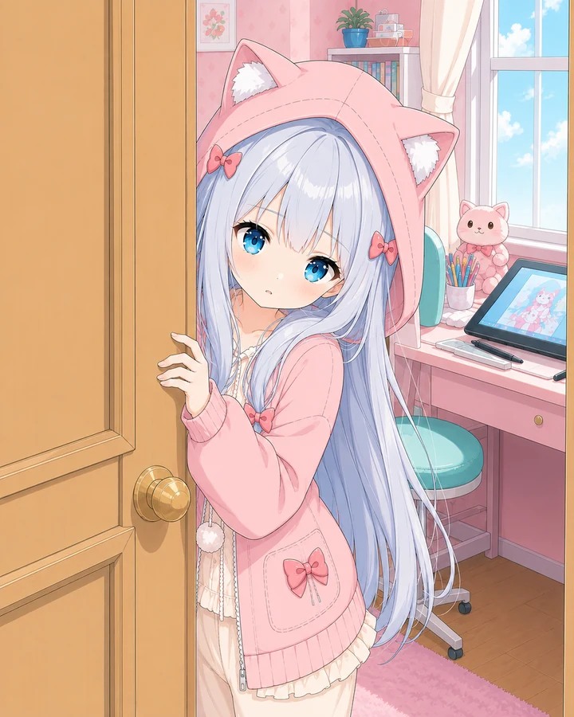
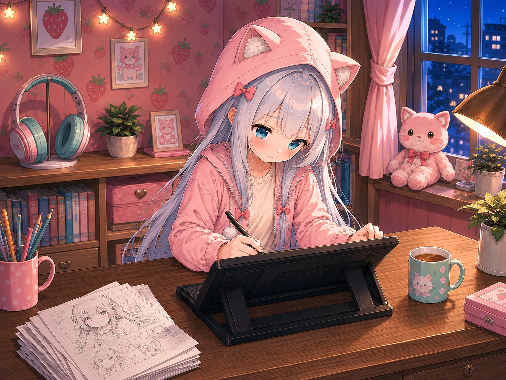
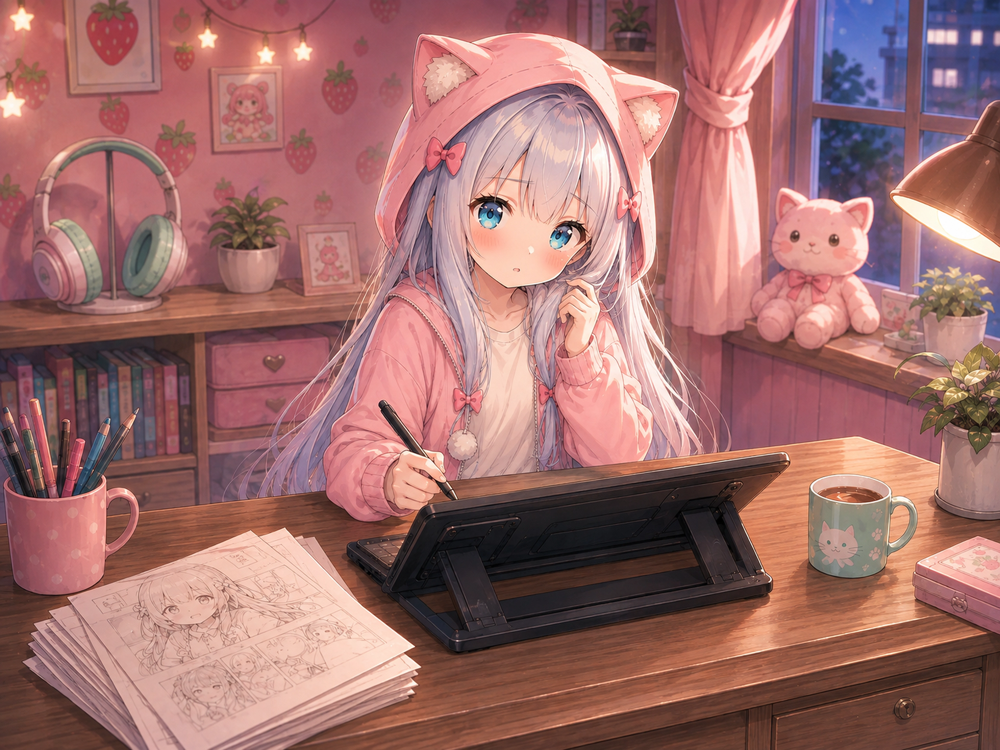
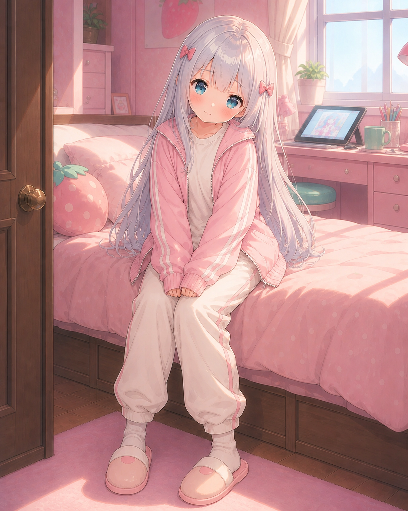
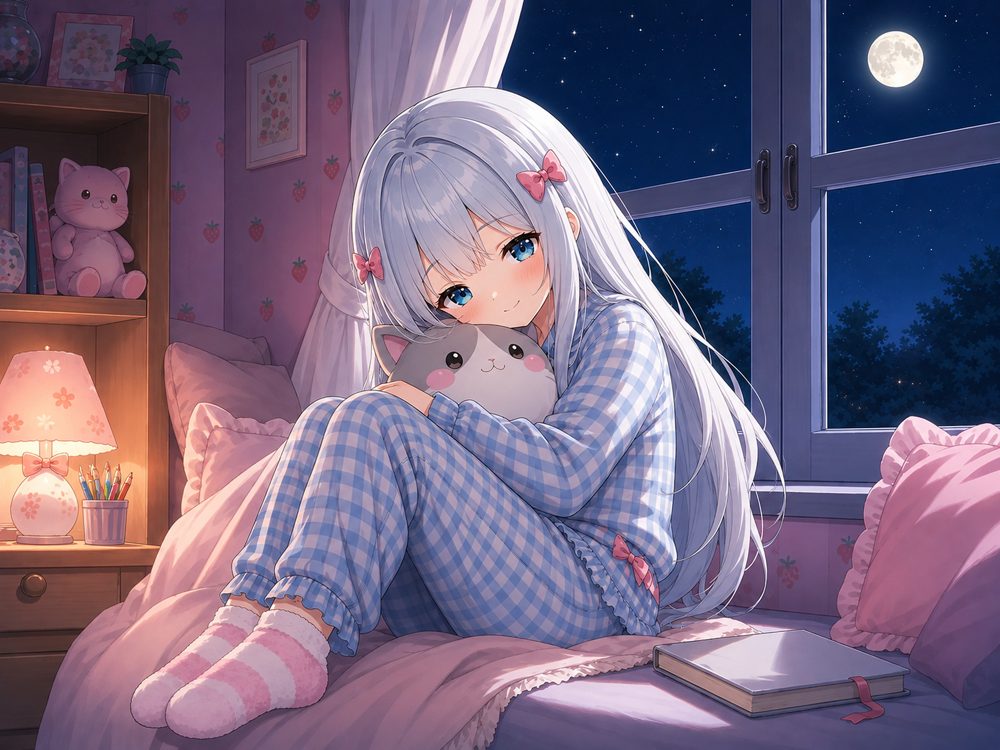

第一次站在门外
门里传来很轻的脚步声。
“先敲门……我才会开。”
门缝里，好像有一双蓝眼睛正在偷看你。
房间会记得你走近的方式。
继续向下走，她会从门缝、笔尖和袖口里一点点回应你。滚动只推动画面，声音永远等你亲手触碰。

她的房间，
比自我介绍更诚实。
她不太擅长把心情说得很长，却会认真收好每一张草稿。靠近一点也可以——只是被她发现时，记得先假装没有一直盯着看。
房间今天也在悄悄生活。
沿着床边的木轨慢慢挪过去。每个角落都有自己的说话方式，碰到的东西也会发出只属于那里的声音。
现在 · 夜里

五个小秘密，
要轻轻地找
五件东西里藏着她不肯主动说的小习惯。直接碰一碰画面里的物件；全部找到后，她才肯把抽屉里的留言推给你。
0 / 5 已发现
先随便看看。她不喜欢把秘密贴成醒目的标记。

衣橱里，她还在认真犹豫。
不是只换一种颜色。每一套都对应她留在房间里的某个时刻，你可以替她做一次不太郑重的决定。

午后 15:20宽松运动家居服
袖子要够长，裤脚要够软。窝在房间里画画的时候，这样才最安心。
她的画册，
只肯一页一页给你看。
房间里的片段被夹进三段胶片。从偷偷开始画，到终于把画推近一点，她越来越藏不住想听见认真感想的小心思。
第一章 · 偷偷开始
被抓到在床上画画
她原本把数位板藏在膝盖上。听见你靠近，只来得及红着脸抬头：“不许笑……这里比较舒服而已。”
她把画推到你面前，自己先躲开了视线。
看过那些画以后，
今晚别走太早。
她会发现你还在，也会在你偷看时慌张地把画盖住。可以帮忙选一件小事，也可以什么都不催，只安静陪她画一会儿。
笔尖还在慢慢移动
要不要安静陪她画一会儿？
她给旁边留了一点位置，却一直装作只是忘了把椅子推回去。
就在旁边，先不催她。
笔尖还在移动。她确认了一下旁边的椅子，没有叫你离开。

门会关上，
纸条可以带走。
一起画过以后，今天的拜访才到这里。她把一张很小的纸条塞到门缝下面——字写得急了一点，但没有收回去。
今晚的小纸条
画不完也没关系，先把今天好好收起来。
收下后会保存在这台设备里；想带到别处，也可以复制纸条文字。